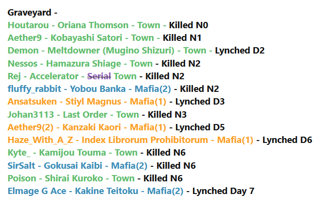

I’ve got kaif townleaned currently and again cause of how it went, I don’t really think so
To be fair the vote was literally within 3 minutes before the day ended

I’ve got kaif townleaned currently and again cause of how it went, I don’t really think so
To be fair the vote was literally within 3 minutes before the day ended
Im not convinced on Aelin, reason im not pursuing that slot is because there are scummier slots than it.
Maybe I read your post wrong or something. Why would you talk about the timing of wanting to vote for Wiisp if you don’t think there’s a w/w thing going on?
what are your thoughts on aelin’s alignment if wisp flips town or scum?
just struggle to see the cfd attempt come from scum aelin personally
Lemonfairy’s analysis of EoD1 is really good. To add to that. Imo if Wisp is scum then Tilg and min probably are too.
I agree with Lemon and Zone my dear  if wisp is also town, you EoD actions do look opportunistic.
if wisp is also town, you EoD actions do look opportunistic.
Already addressed Tilg’s read on you. He accused you of being scummy for doing things that he is actually doing.
My EoD was beautiful
I had no reason to do anymore, my only regret was not pushing harder against the PKR train
But in hindsight Kaif would have been worse anyways
I also want to find all the people that talked about 3ps, there is no way there isn’t a wolf in that grouping.
Uh
lemme think
from top to bottom
zone is a nulltown, i havent seen quite what im looking for from him yet though
blitz is a townlean just based off of tone, dont really have more on that front
wind probtown, tone isnt shit
kaif twtbw in a lot of places
dont remember much from nika but all of my memories of them are from when they were trying to spark discussion so townlean on that
min iso looks a bit better on second readthru so i kinda wanna go back and look at the wagon on them eventually
i remember thinking merc was towny day one but i havent seen them at all today so shrugze
[quote=“Darling in the Franxx SFM - [19/21] | Day 2, post:4426, topic:87703”]
Just talking from a general game-wide perspective on where I’m at right now:
I’m trying to focus on developing and working with my townreads today to narrow the PoE for wolves. I think my accuracy in catching wolves is… mediocre at best, but I know that I am pretty good at recognizing town as town, and I am good at working with people I’m on the same wavelength with to solve the game.
I have townreads of varying degrees on: Lemonfairy, WindwardAway, Guill, Aelin, Helz, Mercenary , and Nightingale (though the latter two are very weak). Silviu is mason. I’m trusting Windward on min for now, so they can go on this list as well.
I have null/Haven’t Look At/ reads on: DerpsALot, Blitz, Lukundo, Nikamura, ErikaFurudo, Tilgarial, and Zone . Kaif is in this weird spot where there is a bunch of conflicting reads on him, and I haven’t bothered to read him after Day 1 ended. I want to try and resolve/read some of these players when I have some more time and not just real-timing.
I am somewhat actively scumreading Wisp , but I don’t even have high confidence he is going to flip scum or not. He’s just weird for me because normally, we are able to recognize each other as town pretty quickly and work together to lunch the wolves. He’s super walled off and is not even trying to work with me at all, which is why I am interrogating him on why he believes the things he believes in.
So yeah, this is where I’m at. Gonna head off to work relatively soon, but at the moment I want kinda flip/continue to interrogate Wisp because knowing his alignment would clear up a lot of things about the other players in this game.
I just… haven’t been able to get to Town on him, and normally I’m able to do that a couple of IRL days when we’re playing together.
[/quote]
my PoE rn is dependent on how Tilg/Wisp flip. I dont mean to toot my own horn and you’ll have to take my word for it since my home forum is down, but my accuracy in catching mafia is really good but I have lost at lylo to mafia once @Guillotina and lost in lylo to independents (I think they are called neutrals here) 4 times. T^T If offsite game linking is allowed I can link my 2nd most recent game (it’s from a few months back but for me it’s the game right before my last. I killed 1 mafia with a vig shot and then led the lynches on 5 mafia in a multiball in a row). Granted I don’t have as much time as I did back then and this post count for this forum is much higher.
I like all your TL except I’m still null on merc and Nightingale
Agree with the null list as well except obv I know I’m town, and I have a town lean on Zone and a null lean on Kaif.
agree that wisp flip might clear up a lot of things about other players as well. I don’t remember them doing much if any scum hunting day 1. I just see that he’s suspicious of Aelin but I’ve missed his reads on her if he’s put forth any. Plus there was one point on day one where he said something to effect that he’s happy to sheep whoever which left a bad impression of me for being opportunistic. I need to iso him and see if I can find the post.
why did the quote not work?
I was responding to this post. from here on is my reply. can ignore previous message they have the same content but this one is less confusing.

ss of the game flow from that game. as you can see. I lynched 5 mafia in a row and killed one myself. :x @Prophylaxis
there were multiple Town vigs. I only shot once and killed mafia.
Also it was my first time playing on that site and I only knew two of the players. similar to how this is my first game on this site and I only know Guillotina and Luk X-x
so I had no meta to help me.
Still I would consider myself an average player cuz I’m not good at appearing townie. I try to keep my meta unchanged and hard to read despite alignment so that meta can’t be used against me. And going by my win/loss ratio I’ve lost way more than I’ve won. so you know, form your own conclusions every game.
Hmm. Maybe they selected Marl as a factional then or there’s also a doc.
I’m inclined to believe the second since this is rolemadness-y and claimvigs/docs are quite common. Whatever. Setup speculation on a closed game won’t lead to anything useful.